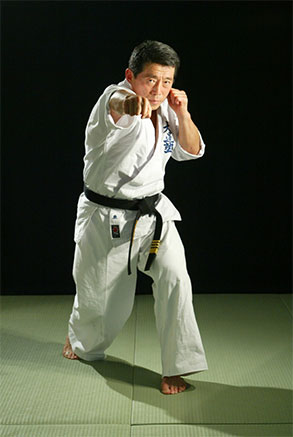

Кудо или Дайдо Дзюку (неточно Дайдо Джуку) — современное полноконтактное
боевое единоборство, созданное в 1981 году мастером восточных единоборств
Адзумой Такаши на основе его знаний о карате кёкусинкай, борьбе дзюдо,
тайском боксе.
В настоящий момент кудо — это динамично развивающийся вид
спорта, признанный в Российской Федерации и других странах
мира, включающий в себя элементы и технические приемы из
арсенала карате, дзюдо, английского и тайского бокса, а также
других видов боевых единоборств.
С философской – создатель вдохнул в него смысл древневосточной
мудрости, значение которой сводилось к тому: ворот,
что выводят на дорогу успехов, не существует, поэтому каждый
воин должен преодолеть страх и боль, чтобы найти её сам.
Главное – вера в душе и правда – на устах.
Появление нового стиля можно было сравнить с эффектом
разорвавшейся бомбы. Эпитеты журналистов сыпались со всех
сторон: «сверхреалистичный», «яростный», «универсальный»…
С 2001 года стиль стал называться «кудо». На этот раз
мастер-философ объяснил смысл двух иероглифов, как «путь
пустоты», где «ку» – пустой, «до» – путь. Кстати, «карате»
переводится, как «путь пустой руки». В этом Такаши видел и
преемственность, и новизну. Однако, как полагают
специалисты, отпочковавшись от карате, кудо стал в большей
степени иным стилем, имеющим свои правила, технику, который
занимает найденную нишу среди единоборств.